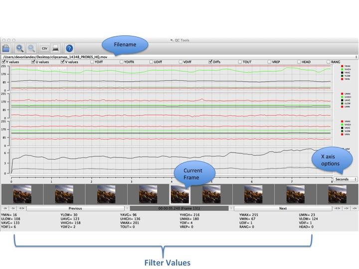
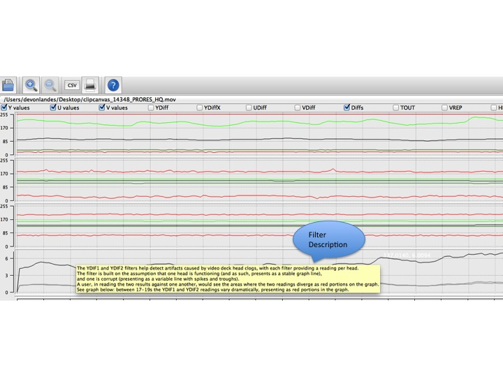
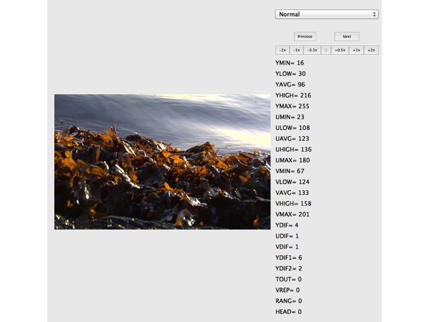
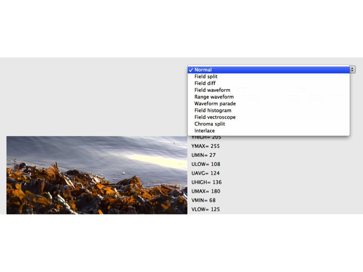

Install
Select the appropriate version, depending on your environment (windows or mac). Initiate the install by double-clicking the icon, and follow the steps.
Load Video Files
You may identify selected video files for QC Tools analysis in two ways:
- Double click the folder icon on the upper left. This launches a window from which you can browse and select video files.
- Navigating to File --> Open.
Select Filters
By clicking the filter box you can select those that you wish to analyze and display. You may make these selections before uploading your video or at any time after the QC Tools analysis has been done and the graph display will update dynamically.
As a default, 'Y values', 'U values', 'V values', and 'Diffs' are selected.
For descriptions of each Filter and how to read graph values, please see the Help Section, denoted by the '?' icon in the toolbox portion of the application.
View and Navigate Graphs
Values display above, corresponding video frames show below. Click 'Next' or 'Previous' to navigate the video frames; the frame and timecode for the particular selection will be displayed. You may also double click a specific frame and a window will appear displaying the image and all of the various filter values, with 'chroma' or 'normal' view options.
Pointing your keyboard cursor to a particular point on a graph will result in the display of two values: the frame, and the timecode of the particular place in the video you have navigated to.
You may also use the '+' and '-' icons in the tool box section of the application to zoom in/out, giving you a more or less detailed view of the graph displays, depending.
Create/ Export a CSV File
You may execute this function in one of two ways:
- Navigate to File --> CSV
- Click the 'CSV' icon in the toolbox section of the application.
Both options will prompt you to name your file and select a select a location.
Additional Functionality in Future Releases
- The ability to re-import CSV files for analysis.
- The ability to select/ add multiple video files to the tool.
Parts of the Tool
Home/Main Viewer:
This view displays the filename, filter selections, X-Axis value selector, and the frame navigator buttons.

Descriptions of a particular filter display as you use your mouse to hover:

Frame Viewer Window:

With the available views:
